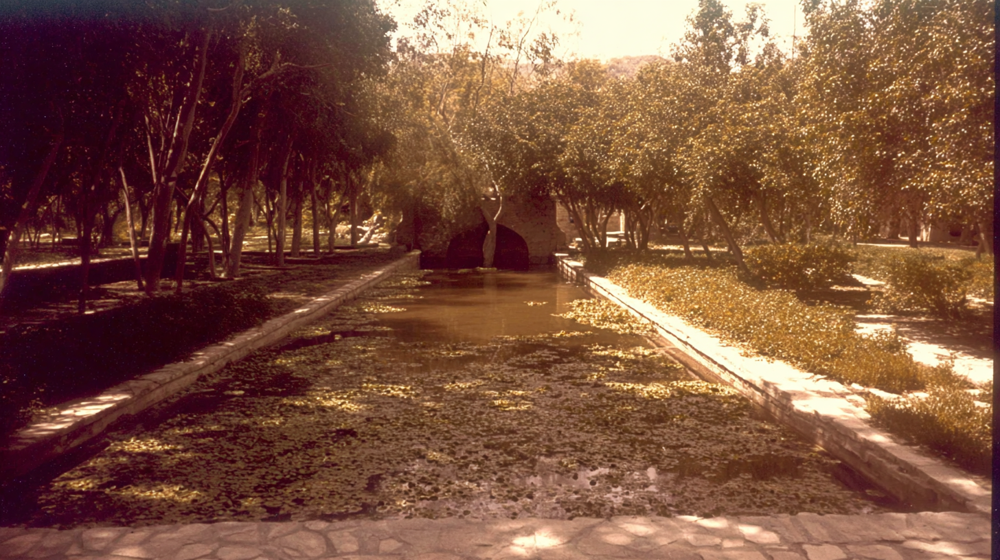
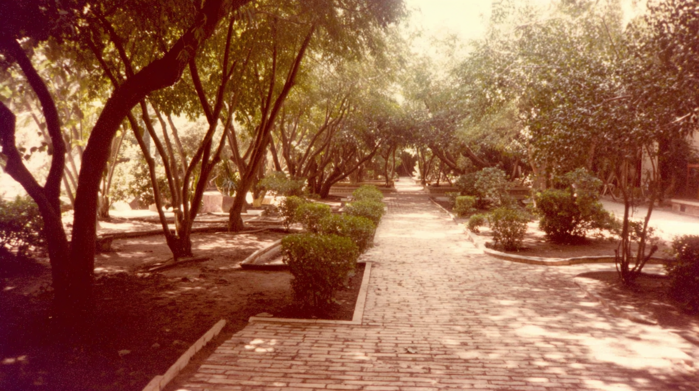
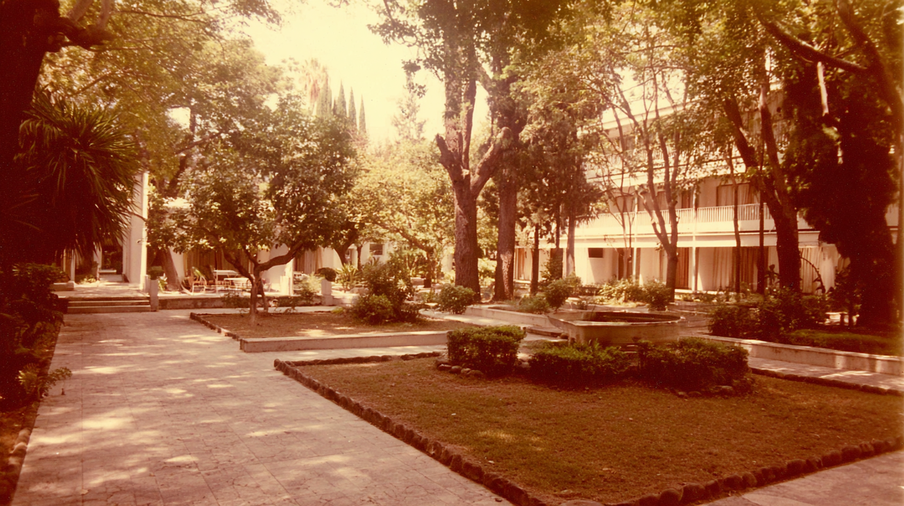
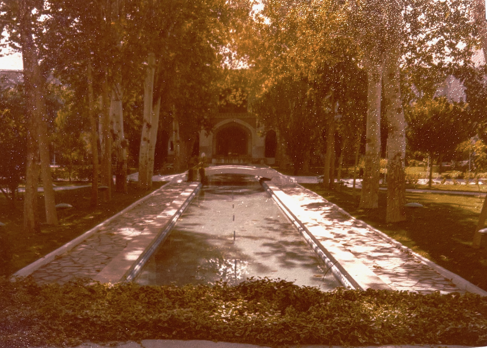
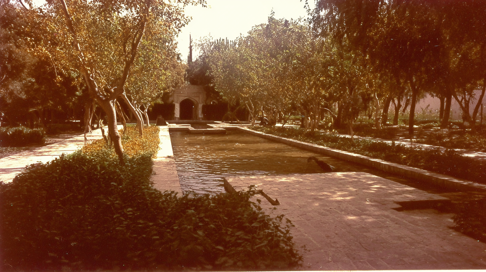

A shaded garden canal covered with leaves, framed by dense trees and stone edges.
A narrow reflecting pool runs beneath tall trees toward a small arched pavilion, vintage, with faded tones.
A brick walkway winds through a quiet, tree-filled park with trimmed shrubs.
dappled sunlight falling through trees in a quiet garden. sepia tone, lush shade from arid heat. edges dissolving into white, subtle light leaks, sense of isolation and time passing, , imperfect composition, 35mm kodachrome, muted natural colors, low contrast grading, soft highlights, hazy atmosphere, arid heat. Light film grain, organic texture, low digital sharpness, no vivid colors. Shot like contemporary cinema, realistic, alive, subtle faded blurry shutter motion
dappled sunlight falling across a canal in a quiet garden. sepia tone, lush shade from arid heat. edges dissolving into white, subtle light leaks, sense of isolation and time passing, , imperfect composition, 35mm kodachrome, muted natural colors, low contrast grading, soft highlights, hazy atmosphere, arid heat. Light film grain, organic texture, low digital sharpness, no vivid colors. Shot like contemporary cinema, realistic, alive, subtle faded blurry shutter motion